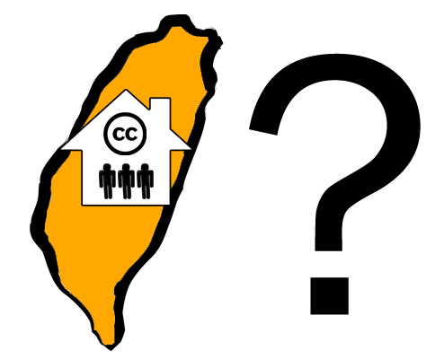

誕生
由於 Creative Commons 在 2002 年發佈的 Creative Commons 授權條款，是依據美國的相關法律設計發展而來，因此，當 Creative Commons 所關切的數位內容可以為各個國家、各個地區的人使用，而各個國家、各個地區的人們也都可能為他們所創造出的數位內容選擇 Creative Commons 授權條款時， Creative Commons 授權條款在不同司法管轄區域中因法律制度而生之差異，便極為重要。為能使更多人得以享受藉由 Creative Commons 授權條款所創造的素材、使更多人可以投入分享創意的活動， Creative Commons 於 2003 年推出 iCommons 計畫，將 Creative Commons 授權條款翻譯為各種語言，同時考慮此種授權方式在各種司法管轄領域（ jurisdiction ，包括國家／地區）內的適法性。
iCommons 主要是將 Creative Commons 授權條款的授權條文 (Lawyer-readable) 部分翻譯為各國語言，並在這個過程中透過公開討論的方式，確認 Creative Commons 授權條款在該司法管轄區域內是否適用，當 Creative Commons 授權條款與該司法管轄區域內的法律有所扞格時，則須以維持 Creative Commons 授權條款的精神為前提，作最小限度的必要修正。這樣的計畫由各司法管轄領域中的機構志願性地與 Creative Commons 合作，提供 Creative Commons 授權條款的翻譯初稿，並協助公開討論的進行，在公開討論之後決定此一初稿是否需要再修正，最後則由 Creative Commons 對 Creative Commons 授權條款的譯稿加以認證，正式成為 Creative Commons 授權條款在某一司法管轄區域內的標準譯本，並將此標準譯本提供於 Creative Commons 授權條款的選擇頁面上。這樣的過程所能確認的只是 Creative Commons授權條款的一個正式翻譯版本，這個過程完成之後， iCommons 的工作才正要開始，必須藉由各種推廣活動來讓 Creative Commons 授權條款在此一司法管轄領域內能更為眾人所熟悉與接受。
中央研究院資訊科學研究所（以下簡稱「中研院資訊所」）因進行自由軟體相關的計畫，而接觸到 Creative Commons ，並在 2003 年 11 月成為 Creative Commons 在台灣的 iCommons 計畫 (Creative Commons Taiwan) 的合作機構，進行 Creative Commons 授權條款華語（台灣）翻譯及公開討論，並與其他機構及創作者合作推廣 Creative Commons ，希望能藉此參與 Creative Commons 所推動的建立全球性公共資源庫的工作。但在此長遠的工作中，中研院資訊所能扮演的只是一個微小的角色， Creative Commons Taiwan 的工作要能有所成效，需要透過更多本地創作者對 Creative Commons 授權條款接受與採用， Creative Commons 的宗旨與所希望推動的目標，包括建立一個合理而富有彈性的著作權模式、以及一個豐富、便捷而花費低廉的公共資源庫，也會由於更多創作者的接受與採用，而更能達到其理念推廣的目的。
「創用 CC 」的由來
自 Creative Commons Taiwan 成立以來， "Creative Commons" 這個英文詞並沒有統一的本地譯名，諸如「創意公用」、「創意公眾」、「創作共用」、「創作共享」等諸多譯名紛雜於部落格圈及學術界。 2005 年 10 月， Creative Commons Taiwan 計畫主持人莊庭瑞率領該計畫會同吳美美、朱約信、邵廣昭、林志峰、許素朱、陳正然、黃海鳴、劉孔中、劉靜怡、盧文祥等專家召開專家會議，決定了 "Creative Commons" 的本地譯名為：「創用 CC 」，將「創作」、「創造」、「創意」容納於「創」字，將「使用」、「公用」、「共用」容納於「用」字，並再保留原文縮寫 "CC"，並以「我們創造，我們使用，我們 CC ！」為簡語，傳達「創用 CC」的精神。
同年 11 月舉辦的 CC Party 記者會上，「創用 CC 」此一譯名正式揭露。從此 Creative Commons Taiwan 計畫亦易名為台灣創用 CC 計畫。
我們的理念
在網路基礎建設成熟的今日，資訊交換與累積似乎變得更容易、迅速、與多樣。然而，現行著作權體制對於著作的散布使用，卻有嚴厲的限制。依據現行的著作權法，著作的使用權利，全然保留於著作權人手中；即所謂的「所有權利保留」（All Rights Reserved）。
任何「合理使用」之外的利用，使用者都要事先取得著作權人的授權，才可進行。這對於志在流通其創作，歡迎別人複製、散布、甚或改作其作品的創作者，反而造成困擾。為求著作的廣泛流通，著作權人對公眾事先、明確的著作使用授權聲明，已逐漸成為趨勢。
著名法律學者 Lawrence Lessig 與具相同理念的先行者，於 2001 年在美國成立 Creative Commons 組織，提出「保留部份權利」（Some Rights Reserved）的相對思考與作法。Creative Commons 以模組化的簡易條件，透過排列組合，提供了6種便利使用的公眾授權條款。創作者可以挑選出最合適自己作品的授權條款，透過簡易的方式自行標示於其作品上，將作品釋出給大眾使用。透過這種自願分享的方式，大家可以群力建立內容豐富、權利清楚、且便於散布的各式內容資源，嘉惠自己與其它眾多的使用者。
Creative Commons 所提供的公眾授權條款，台灣稱為「創用 CC」授權條款，取其授權方式便於著作的「創」作與使「用」之意。「創用 CC」授權條款引進於台灣，所需要的本地化工作（將授權條文由英文翻譯為華文，並切合台灣著作權法的用語），於 2003 年起，由[[http://www.iis.sinica.edu.tw/index_zh.html|中央研究院資訊科學研究所]]經費支援，並於2009年，轉由[[http://www.citi.sinica.edu.tw/tw_index.php|中央研究院資訊科技創新研究中心]]繼續支持。
我們在做甚麼
本計畫大致粗分為四大軸線運作，包含：基礎建設、諮詢服務、合作推廣以及國際交流。
- 基礎建設：
- 授權條款本地化：
關於授權條款本地化的部分，目前完成[[n:180|創用 CC 授權條款 3.0 台灣版]]上線的作業，公眾已可自行利用。我們目前仍繼續進行 [[n:154|CC0（公共領域宣示）本地化]]的工作。 - 授權資訊管理工具開發：
由於公眾在網路上尋找公眾授權著作時，常會碰到授權資訊與著作分離的狀態，導致日後在利用蒐羅來的著作時，無法迅速找到相關授權資訊，而產生困擾。有鑑於此需求，我們嘗試結合[[n:175|辨識工具 MozCC 以及資訊管理工具 Zotero 做出 firefox plug in]]，透過讓著作和授權資訊產生關連，協助使用者能夠輕鬆地引用相關授權資訊。而單一頁面常有多個著作與多個授權資訊，其明確對應辨認的工作，將是未來技術工具持續開發的方向，希望能夠正確且完整地擷取授權資訊，以協助使用者管理。
- 授權條款本地化：
- 諮詢服務：
- 除透過計畫網站完整傳遞正確、透明的基礎知識，並且每月提供[[/newsletter|創用 CC 電子報]]的服務，同時也以[[n:449|部落格]]的型態提供國內外創用 CC 相關即時新聞，讓國人能掌握第一手的資訊。我們也提供線上論壇與[[n:12|電話即時諮詢服務]]，協助解答使用者的相關提問。
- 合作推廣：
- 這些年著眼在教育領域以及公部門的推動，除了與教育部以及文建會合作[[/sites/creativecommons.tw/files/static/cchandbook_edu_2008.pdf|《創作分享˙快樂使用：簡介創用 CC 授權》]]、[[/sites/creativecommons.tw/files/static/cchandbook_gov_2008.pdf|《創用 CC 授權指引-政府機關及民間組織篇》]]兩本推廣手冊外，我們也積極至各級學校以及研考會、公共電視、新聞局等公部門進行推廣講習。另外，我們也透過提供講師的方式，與民間團體合作動態性的活動。
- 國際交流：
- 我們亦透過辦理國際性研討會以及參與國際會議，強化國際間的交流互動，同時會發起跨國合作計畫，如：創用 CC 亞洲樂團專案計畫（CABACA 專案計畫）、CC Asia and Pacific Newsletter（亞太創用 CC 新聞交流報），以加強亞太區域相關計畫的網絡連結。